វត្ថុបំណង
- 1. ធ្វើតារាងបំណែងចែកទិន្នន័យ
- 2. បកស្រាយទិន្នន័យតាមក្រាបសសរ
- 3. សង់ក្រាបសសរ ។
1. ក្រាបសសរ
ក្រាបសសរ ជាក្រាបដែលមានរាងចតុកោណកែងតាងឱ្យទិន្នន័យស្ថិតិ ដើម្បីងាយស្រួលក្នុងការបកស្រាយទិន្នន័យ ។
ស្ថិតិ ជាការប្រមូលនិងវិភាគទិន្នន័យជាលេខក្នុងបរិមាណច្រើន ដើម្បីធ្វើសេចក្តីសន្និដ្ឋានរួម ។
គេប្រើក្រាបសសរដើម្បីបង្ហាញព័ត៌មាន ហើយគេប្រើក្រាបសសរភ្លោះ ដើម្បីប្រៀបធៀបទិន្នន័យដែលមានពីរឬច្រើនប្រភេទខុសគ្នាក្នុងអំឡុងពេលតែមួយ ។
គេស្រង់អាយុសិស្ស 40 នាក់ក្នុងថ្នាក់រៀនមួយបានដូចខាងក្រោម ៖
| 11 | 11 | 12 | 13 | 14 | 12 | 13 | 12 | 11 | 14 |
| 14 | 11 | 12 | 12 | 12 | 14 | 13 | 13 | 13 | 13 |
| 11 | 12 | 13 | 12 | 14 | 11 | 13 | 12 | 11 | 14 |
| 12 | 13 | 12 | 12 | 13 | 12 | 12 | 11 | 14 | 13 |
អាយុសិស្សដែលគេស្រង់បានខាងលើហៅថា ទិន្នន័យ ។ ទិន្នន័យខាងលើពិបាកឱ្យគេដឹងថា តើសិស្សអាយុប៉ុន្មានឆ្នាំមានចំនួនច្រើនជាងគេ និងសិស្សអាយុប៉ុន្មានឆ្នាំមានចំនួនតិចជាងគេ? ដូច្នេះគេត្រូវរៀបចំទិន្នន័យដាក់ក្នុងតារាងដូចខាងក្រោម ។
ដំបូងគេត្រូវពិនិត្យមើលអាយុសិស្សដែលតិចជាងគេ និងអាយុសិស្សដែលច្រើនជាងគេ រួចគេធ្វើតារាងបែងចែកចំនួនអាយុសិស្សទៅតាមឆ្នាំ ។ គេបានតារាងមួយហៅថា តារាងបំណែងចែកទិន្នន័យ ។
| អាយុសិស្ស(ឆ្នាំ) | ចំនួនសិស្ស |
| 11 | 8 |
| 12 | 14 |
| 13 | 11 |
| 14 | 7 |
តាមតារាងនេះ គេអាចដឹងភ្លាមថា
- សិស្សភាគច្រើនមានអាយុ 12 ឆ្នាំ
- សិស្សភាគតិចមានអាយុ 14 ឆ្នាំ
ដើម្បីឱ្យកាន់តែងាយជាងនេះ គេក៏អាចបកស្រាយតារាងបំណែងចែកទិន្នន័យជាក្រាបសសរផងដែរ ។
- តាងអ័ក្សដេក ជាអាយុសិស្ស
- តាងអ័ក្សឈរ ជាចំនួនសិស្ស
- ដោយយក 1 ឯកតាតាងសិស្សម្នាក់ ។
រូបតាងនេះគេហៅថា ក្រាបសសរ ។
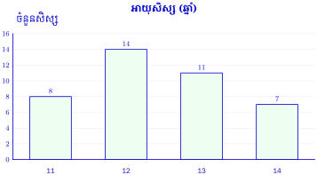
បកស្រាយ
- សសរទី 1 បង្ហាញថាសិស្សអាយុ 11 ឆ្នាំ មានចំនួន 8 នាក់
- សសរទី 2 បង្ហាញថាសិស្សអាយុ 12 ឆ្នាំ មានចំនួន 14 នាក់
- សសរទី 3 បង្ហាញថាសិស្សអាយុ 13 ឆ្នាំ មានចំនួន 11 នាក់
- សសរទី 4 បង្ហាញថាសិស្សអាយុ 14 ឆ្នាំ មានចំនួន 7 នាក់ ។
គេអាចសង់ក្រាបសសរ ជាទម្រង់ផ្ដេកដោយយកអ័ក្សដេកតាងចំនួនសិស្ស និងអ័ក្សឈរតាងអាយុសិស្ស ។
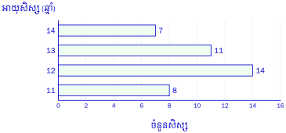
គេប្រើក្រាបសសរសម្រាប់បង្ហាញព័ត៌មាន ។
ក្រាបសសរខាងក្រោមបង្ហាញពីអាយុកាលគិតជាឆ្នាំ នៃគ្រឿងអគ្គិសនីប្រើប្រាស់ក្នុងផ្ទះ ។
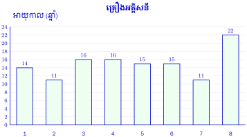
- ឆ្នាំងបាយខ្សែភ្លើង
- ម៉ាស៊ីនបោកខោអាវ
- ទូរទឹកកក
- ចង្ក្រានអគ្គិសនី
- ម៉ាស៊ីនអាំងសាច់
- ម៉ាស៊ីនត្រជាក់
- ទូរទស្សន៍
- ម៉ាស៊ីនដេរ
- ក. តើគ្រឿងអគ្គិសនីណាមានអាយុកាលប្រើប្រាស់ច្រើនជាងគេ ហើយគ្រឿងអគ្គិសនីណាមានអាយុកាលប្រើប្រាស់តិចជាងគេ?
- ខ. រកភាគរយនៃគ្រឿងអគ្គិសនីមានអាយុកាលប្រើប្រាស់តិចជាង 12 ឆ្នាំ ។
- ក. តាមក្រាប ម៉ាស៊ីនដេរមានអាយុកាលវែងជាងគេ គឺ \(\displaystyle 22\) ឆ្នាំ។ ម៉ាស៊ីនបោកខោអាវនិងទូរទស្សន៍មានអាយុកាលខ្លីជាងគេ គឺ \(\displaystyle 11\) ឆ្នាំ។
- ខ.
គ្រឿងអគ្គិសនីដែលមានអាយុកាលតិចជាង \(\displaystyle 12\) ឆ្នាំមាន \(\displaystyle 2\) ប្រភេទ ក្នុងចំណោម \(\displaystyle 8\) ប្រភេទ។ គេបាន ៖
\[\begin{aligned} p &= \frac{2}{8}\times100\% \\ &=25\% \end{aligned}\]
ដូចនេះ ម៉ាស៊ីនដេរមានអាយុកាលវែងជាងគេ ហើយគ្រឿងអគ្គិសនីដែលមានអាយុកាលតិចជាង \(\displaystyle 12\) ឆ្នាំមាន \(\displaystyle 25\%\)។
គ្រួសារមួយបានកត់ត្រាការចំណាយនិងការសន្សំប្រចាំខែ ដើម្បីរៀបចំផែនការហិរញ្ញវត្ថុរយៈពេលវែង ។ ការចំណាយនិងការសន្សំមានបង្ហាញក្នុងតារាងខាងក្រោម៖
| បរិយាយ | ចំនួនទឹកប្រាក់ |
| កាតទូរសព្ទ | 20 000 ៛ |
| ថ្លៃឈ្នួលផ្ទះ | 500 000 ៛ |
| ទូទាត់សងកម្ចីធនាគារ | 450 000 ៛ |
| សាំងម៉ូតូ | 70 000 ៛ |
| អគ្គិសនី | 90 000 ៛ |
| ម្ហូបអាហារ | 700 000 ៛ |
| សន្សំ | 50 000 ៛ |
| សម្លៀកបំពាក់ | 150 000 ៛ |
- ក. សង់ក្រាបសសរដោយប្រើប្រាស់ទិន្នន័យក្នុងតារាងខាងលើ
- ខ. តើគ្រួសារនេះត្រូវការប្រាក់ចំណូលប៉ុន្មានសម្រាប់ការចំណាយនិងការសន្សំទាំងនេះ?
- គ. តើគ្រួសារនេះចំណាយប្រាក់លើអ្វីច្រើនជាងគេបំផុត?
- ឃ. តើគ្រួសារនេះចំណាយប្រាក់លើអ្វីតិចជាងគេបំផុត?
- ង. ផ្អែកលើក្រាបសសរនេះ តើអ្នកគួរផ្តល់ដំបូន្មានដល់គ្រួសារមួយនេះដូចម្តេចក្នុងការគ្រប់គ្រងប្រាក់ និងការធ្វើផែនការហិរញ្ញវត្ថុ?
- ក.
យកអ័ក្សដេកតាងប្រភេទការចំណាយនិងការសន្សំ ហើយអ័ក្សឈរតាងទឹកប្រាក់គិតជារៀល។ ខ្នាតមួយជំហានស្មើ \(\displaystyle 100~000\) ៛។
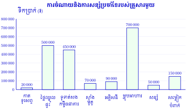
- ខ.
បូកការចំណាយនិងការសន្សំទាំងអស់ ៖
\[\begin{aligned} T &=20~000+500~000 \\ &\quad+450~000+70~000 \\ &\quad+90~000+700~000 \\ &\quad+50~000+150~000 \\ &=2~030~000~\text{៛} \end{aligned}\]ដូចនេះ គ្រួសារត្រូវការប្រាក់ចំណូលយ៉ាងតិច \(\displaystyle 2~030~000\) ៛ ក្នុងមួយខែ។
- គ. ការចំណាយច្រើនជាងគេគឺម្ហូបអាហារ មានចំនួន \(\displaystyle 700~000\) ៛ ក្នុងមួយខែ។
- ឃ. ការចំណាយតិចជាងគេគឺកាតទូរសព្ទ មានចំនួន \(\displaystyle 20~000\) ៛ ក្នុងមួយខែ។
- ង. បើទម្រង់ចំណាយនៅដដែល គ្រួសារគួរបម្រុងប្រាក់យ៉ាងតិច \(\displaystyle 2~030~000\) ៛ ក្នុងមួយខែ។ គួរកត់ត្រាចំណាយនិងការសន្សំជាប្រចាំ និងពិនិត្យចំណាយដែលអាចកាត់បន្ថយ ដើម្បីបង្កើនប្រាក់សន្សំសម្រាប់គ្រាអាសន្ននិងអនាគត។
តារាងខាងក្រោមនេះជាលទ្ធផលសិស្សសាលារៀន 3 គឺ M N និង Q បានប្រឡងជាប់សញ្ញាបត្រមធ្យមសិក្សាបឋមភូមិ ។
| សាលា | M | N | Q |
| ចំនួនសិស្សប្រឡង | 120 | 150 | 95 |
| ចំនួនសិស្សប្រឡងជាប់ | 25 | 30 | 18 |
- ក. បង្ហាញអត្រាសិស្សប្រឡងជាប់នៃសាលានីមួយៗជាក្រាប
- ខ. តើសាលាណាមានភាគរយសិស្សជាប់ច្រើនជាងគេ?
មើលចម្លើយ
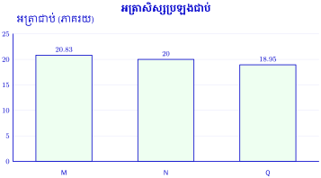
- ក.
អត្រាជាប់ស្មើចំនួនសិស្សជាប់ចែកនឹងចំនួនសិស្សប្រឡង រួចគុណនឹង \(\displaystyle 100\%\) ៖
\[\begin{aligned} p_M&=\frac{25}{120}\times100\%\approx20.83\% \\ p_N&=\frac{30}{150}\times100\%=20\% \\ p_Q&=\frac{18}{95}\times100\%\approx18.95\% \end{aligned}\]ក្រាបខាងលើយកអ័ក្សដេកតាងសាលា និងអ័ក្សឈរតាងអត្រាជាប់គិតជាភាគរយ។
- ខ. ដោយ \(\displaystyle 20.83>20>18.95\) ដូចនេះ សាលា \(\displaystyle M\) មានអត្រាសិស្សជាប់ច្រើនជាងគេ។
ដូចនេះ អត្រាជាប់គឺ \(\displaystyle 20.83\%\), \(\displaystyle 20\%\) និង \(\displaystyle 18.95\%\) ហើយសាលា \(\displaystyle M\) ខ្ពស់ជាងគេ។
បកស្រាយក្រាបសសរភ្លោះខាងក្រោមដែលបង្ហាញពីផែនការចំណាយនិងសន្សំក្នុងរយៈពេល 4 ខែ ។
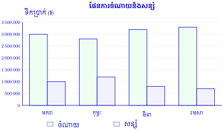
| បរិយាយ | មករា | កុម្ភៈ | មីនា | មេសា |
| ចំណាយ (៛) | 3 000 000 | 2 800 000 | 3 200 000 | 3 300 000 |
| សន្សំ (៛) | 1 000 000 | 1 200 000 | 800 000 | 700 000 |
- ក. តើផែនការចំណាយច្រើនជាងគេនៅក្នុងខែណា?
- ខ. តើផែនការសន្សំច្រើនជាងគេនៅក្នុងខែណា?
- គ. តើផែនការចំណាយរយៈពេល 4 ខែមានចំនួនសរុបប៉ុន្មាន?
- ឃ. តើផែនការសន្សំរយៈពេល 4 ខែមានចំនួនសរុបប៉ុន្មាន?
- ង. ចូរពណ៌នាអំពីផែនការចំណាយធៀបនឹងផែនការសន្សំ ។
មើលចម្លើយ
- ក. ខែមេសាមានផែនការចំណាយច្រើនជាងគេ គឺ \(\displaystyle 3~300~000\) ៛។
- ខ. ខែកុម្ភៈមានផែនការសន្សំច្រើនជាងគេ គឺ \(\displaystyle 1~200~000\) ៛។
- គ.
ចំណាយសរុបរយៈពេល \(\displaystyle 4\) ខែ ៖
\[\begin{aligned} C&=3~000~000+2~800~000 \\ &\quad+3~200~000+3~300~000 \\ &=12~300~000~\text{៛} \end{aligned}\] - ឃ.
សន្សំសរុបរយៈពេល \(\displaystyle 4\) ខែ ៖
\[\begin{aligned} S&=1~000~000+1~200~000 \\ &\quad+800~000+700~000 \\ &=3~700~000~\text{៛} \end{aligned}\] - ង. គ្រប់ខែ ចំណាយច្រើនជាងការសន្សំ ហើយចំណាយបូកសន្សំស្មើ \(\displaystyle 4~000~000\) ៛។ នៅពេលចំណាយកើន ការសន្សំថយ។ ឧទាហរណ៍ ខែមេសាចំណាយខ្ពស់ជាងគេ ហើយសន្សំទាបជាងគេ។
ដូចនេះ ចំណាយសរុប \(\displaystyle 12~300~000\) ៛ និងសន្សំសរុប \(\displaystyle 3~700~000\) ៛។
ការធ្វើផែនការហិរញ្ញវត្ថុច្បាស់លាស់ជួយឱ្យអ្នកគ្រប់គ្រងប្រាក់ប្រកបដោយការទទួលខុសត្រូវនិងមានប្រាក់សម្រាប់ចំណាយក្នុងគ្រាអាសន្នឬការចំណាយធំៗដោយមិនចាំបាច់ខ្ចីប្រាក់ ។
លំហាត់
គេបោះគ្រាប់ឡុកឡាក់មួយដោយបោះ 36 ដងទទួលបានលទ្ធផលដូចខាងក្រោម៖
4 1 3 6 4 4 6 2 5 5 3 4 3 4 2 2 6 2
4 6 3 3 1 6 6 4 4 2 2 5 5 1 1 2 3 4- ក. បំពេញតារាងខាងក្រោម ៖
លេខមុខគ្រាប់ឡុកឡាក់ 1 2 3 4 5 6 ចំនួនដង - ខ. គូសក្រាបសសរតាងទិន្នន័យ ។
មើលដំណោះស្រាយ
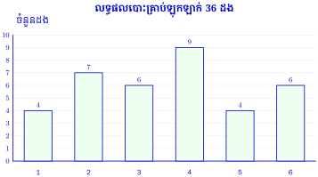
- ក.
រាប់ចំនួនដងដែលលេខនីមួយៗលេចឡើង បានតារាង ៖
លេខមុខគ្រាប់ឡុកឡាក់ 1 2 3 4 5 6 ចំនួនដង 4 7 6 9 4 6 ផ្ទៀងផ្ទាត់ចំនួនដងសរុប ៖
\[4+7+6+9+4+6=36\] - ខ. យកអ័ក្សដេកតាងលេខមុខគ្រាប់ឡុកឡាក់ពី \(\displaystyle 1\) ដល់ \(\displaystyle 6\) និងអ័ក្សឈរតាងចំនួនដង។ ខ្នាតមួយជំហានតាង \(\displaystyle 1\) ដង។ សង់សសរមានកម្ពស់ \(\displaystyle 4,7,6,9,4,6\) រៀងគ្នា ដូចក្រាបខាងលើ។
ដូចនេះ តារាងនិងក្រាបតាងលទ្ធផលបោះទាំង \(\displaystyle 36\) ដង ហើយលេខ \(\displaystyle 4\) លេចឡើងច្រើនជាងគេ គឺ \(\displaystyle 9\) ដង។
នៅក្នុងថ្នាក់រៀនមួយមានសិស្ស 25 នាក់ ក្នុងនោះអ្នកមានម៉ូតូ 8 នាក់ មានកង់ 5 នាក់ ក្រៅពីនេះគ្មានយានជំនិះ ។ ធ្វើតារាងបំណែងចែកទិន្នន័យ រួចសង់ក្រាបសសរ ។
មើលដំណោះស្រាយ
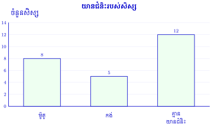
ចំនួនសិស្សគ្មានយានជំនិះ ៖
\[\begin{aligned} n&=25-8-5 \\ &=12~\text{នាក់} \end{aligned}\]យានជំនិះ ម៉ូតូ កង់ គ្មានយានជំនិះ ចំនួនសិស្ស 8 5 12 យកអ័ក្សដេកតាងប្រភេទយានជំនិះ និងអ័ក្សឈរតាងចំនួនសិស្ស។ សង់សសរកម្ពស់ \(\displaystyle 8,5,12\) រៀងគ្នា ដូចក្រាបខាងលើ។ ផ្ទៀងផ្ទាត់ ៖
\[8+5+12=25\]ដូចនេះ សិស្សមានម៉ូតូ \(\displaystyle 8\) នាក់ មានកង់ \(\displaystyle 5\) នាក់ និងគ្មានយានជំនិះ \(\displaystyle 12\) នាក់។
តារាងខាងស្តាំ គឺជាលទ្ធផលដែលសិស្សសាលារៀន បី A, B និង C បានប្រឡងជាប់សញ្ញាបត្រមធ្យមសិក្សាបឋមភូមិ ។ បង្ហាញអត្រាសិស្សដែលប្រឡងជាប់តាមសាលានីមួយៗដោយក្រាបសសរ ។
សាលា A B C ចំនួនសិស្សប្រឡង 250 300 280 ចំនួនសិស្សប្រឡងជាប់ 49 67 43 មើលដំណោះស្រាយ
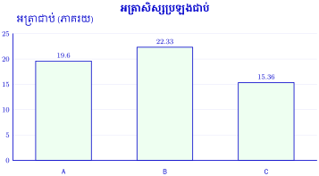
គណនាអត្រាជាប់របស់សាលានីមួយៗ ៖
\[\begin{aligned} p_A&=\frac{49}{250}\times100\%=19.60\% \\ p_B&=\frac{67}{300}\times100\%\approx22.33\% \\ p_C&=\frac{43}{280}\times100\%\approx15.36\% \end{aligned}\]យកអ័ក្សដេកតាងសាលា \(\displaystyle A,B,C\) និងអ័ក្សឈរតាងអត្រាជាប់គិតជាភាគរយ។ សង់សសរដោយប្រើតម្លៃខាងលើ។ ដូចនេះ អត្រាជាប់គឺ \(\displaystyle 19.60\%\), \(\displaystyle 22.33\%\) និង \(\displaystyle 15.36\%\) រៀងគ្នា។ សាលា \(\displaystyle B\) មានអត្រាជាប់ខ្ពស់ជាងគេ។
ស្រង់ចំនួនសិស្សក្នុងថ្នាក់រៀន អ្នកមានបងប្អូនបង្កើតឬគ្មានដាក់ក្នុងតារាងដូចខាងស្តាំ រួចតាងទិន្នន័យជាក្រាបសសរ ។
ចំនួនបងប្អូន 0 1 2 3 4 5 ចំនួនសិស្ស មើលដំណោះស្រាយ
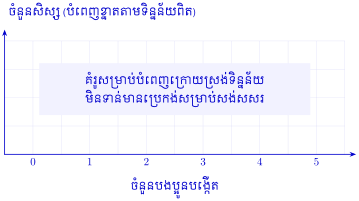
លំហាត់នេះតម្រូវឱ្យស្រង់ទិន្នន័យក្នុងថ្នាក់រៀនផ្ទាល់។ សៀវភៅមិនបានផ្តល់ចំនួនសិស្សក្នុងក្រុមនីមួយៗទេ ដូចនេះមិនមានចម្លើយជាលេខតែមួយឡើយ។
- សួរសិស្សម្នាក់ៗអំពីចំនួនបងប្អូនបង្កើតរបស់ខ្លួន ដោយមិនរាប់ខ្លួនឯង។
- តាង \(\displaystyle n_0,n_1,n_2,n_3,n_4,n_5\) ជាចំនួនសិស្សដែលមានបងប្អូន \(\displaystyle 0,1,2,3,4,5\) នាក់រៀងគ្នា។ បំពេញតារាងតាមចំនួនដែលរាប់បាន។
ចំនួនបងប្អូន 0 1 2 3 4 5 ចំនួនសិស្ស \(\displaystyle n_0\) \(\displaystyle n_1\) \(\displaystyle n_2\) \(\displaystyle n_3\) \(\displaystyle n_4\) \(\displaystyle n_5\) ផ្ទៀងផ្ទាត់ថា ផលបូកប្រេកង់ស្មើចំនួនសិស្សដែលបានស្រង់ ៖
\[N=n_0+n_1+n_2+n_3+n_4+n_5\]យកអ័ក្សដេកតាងចំនួនបងប្អូន និងអ័ក្សឈរតាងចំនួនសិស្ស។ ជ្រើសខ្នាតស្មើៗគ្នាដែលសមនឹងចំនួនធំបំផុត ហើយសង់សសរមានកម្ពស់ \(\displaystyle n_0\) ដល់ \(\displaystyle n_5\)។ បើមានសិស្សដែលមានបងប្អូនលើស \(\displaystyle 5\) នាក់ ត្រូវបន្ថែមជួរឈរតាមចំនួនពិត។ ដូចនេះ តារាងនិងក្រាបត្រូវបំពេញតាមទិន្នន័យពិតរបស់ថ្នាក់ ដោយមិនបង្កើតចំនួនសិស្សឡើងដោយខ្លួនឯង។
ក្រាបសសរនេះបង្ហាញពីការចូលចិត្តរបស់សិស្សខាងផ្នែកកីឡាក្នុងសាលារៀនមួយ ។
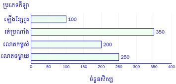
- ក. តើប្រភេទកីឡាណាដែលសិស្សចូលចិត្តជាងគេ ហើយមានប៉ុន្មានភាគរយ?
- ខ. រកចំនួនសិស្សសរុបក្នុងសាលារៀននោះ ។
មើលដំណោះស្រាយ
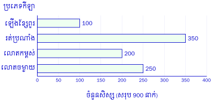
ចំនួនសិស្សតាមក្រាបគឺ ឡើងខ្សែពួរ \(\displaystyle 100\) នាក់ រត់ប្រណាំង \(\displaystyle 350\) នាក់ លោតកម្ពស់ \(\displaystyle 200\) នាក់ និងលោតចម្ងាយ \(\displaystyle 250\) នាក់។
- ក.
រត់ប្រណាំងមានអ្នកចូលចិត្តច្រើនជាងគេ គឺ \(\displaystyle 350\) នាក់។ ដើម្បីរកភាគរយ គណនាចំនួនសិស្សសរុបជាមុន ៖
\[\begin{aligned} N&=100+350+200+250 \\ &=900~\text{នាក់} \\ p&=\frac{350}{900}\times100\% \\ &\approx38.89\% \end{aligned}\] - ខ. ចំនួនសិស្សសរុបគឺ \(\displaystyle 900\) នាក់។
ដូចនេះ កីឡារត់ប្រណាំងមានអ្នកចូលចិត្តច្រើនជាងគេ ប្រហែល \(\displaystyle 38.89\%\) ហើយមានសិស្សសរុប \(\displaystyle 900\) នាក់។ ការបូកនេះយកតាមន័យលំហាត់ថា សិស្សម្នាក់ត្រូវបានរាប់ក្នុងកីឡាមួយប៉ុណ្ណោះ។
នេះជាតារាងបំណែងចែកនៃការលក់ថាសចម្រៀង 3 ប្រភេទគឺ CD, VCD និង DVD ។
ត្រីមាស CD VCD DVD ទី 1 40 70 75 ទី 2 55 60 80 ទី 3 45 65 85 - ក. បកស្រាយទិន្នន័យខាងលើជាក្រាបសសរភ្លោះ
- ខ. តើក្នុងត្រីមាសណាគេលក់ DVD បានច្រើនជាងគេ ហើយបានប៉ុន្មានបន្ទះ ?
មើលដំណោះស្រាយ
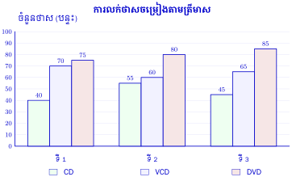
- ក.
យកអ័ក្សដេកតាងត្រីមាស និងអ័ក្សឈរតាងចំនួនថាសចម្រៀង។ មួយក្រុមមាន \(\displaystyle 3\) សសរ តាង \(\displaystyle CD,VCD,DVD\)។ ប្រើពណ៌ឬសញ្ញាផ្សេងគ្នា និងមានបញ្ជីសម្គាល់ដូចក្រាបខាងលើ។
- ត្រីមាសទី \(\displaystyle 1\) ៖ \(\displaystyle 40,70,75\) បន្ទះ។
- ត្រីមាសទី \(\displaystyle 2\) ៖ \(\displaystyle 55,60,80\) បន្ទះ។
- ត្រីមាសទី \(\displaystyle 3\) ៖ \(\displaystyle 45,65,85\) បន្ទះ។
- ខ.
ប្រៀបធៀបការលក់ \(\displaystyle DVD\) ៖
\[85>80>75\]ដូចនេះ ត្រីមាសទី \(\displaystyle 3\) លក់ \(\displaystyle DVD\) បានច្រើនជាងគេ គឺ \(\displaystyle 85\) បន្ទះ។
ដូចនេះ ក្រាបមានបីក្រុមសសរ ហើយការលក់ \(\displaystyle DVD\) ខ្ពស់បំផុតនៅត្រីមាសទី \(\displaystyle 3\)។
នេះជាតារាងបំណែងចែកចំនួនសិស្សប្រុសនិងចំនួនសិស្សស្រីសម្រាប់ថ្នាក់ទី 7 ក្នុងសាលារៀនមួយ ។
ថ្នាក់ទី 7 ក 7 ខ 7 គ 7 ឃ ប្រុស 25 18 20 19 ស្រី 14 16 17 20 - ក. គូសក្រាបសសរភ្លោះតាងទិន្នន័យខាងលើ
- ខ. តើក្នុងថ្នាក់ទី 7 ក មានសិស្សប្រុសលើសសិស្សស្រីប៉ុន្មានភាគរយ?
មើលដំណោះស្រាយ
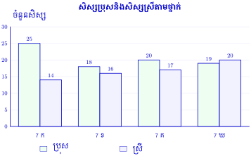
- ក. យកអ័ក្សដេកតាងថ្នាក់ទី \(\displaystyle 7\) ក, \(\displaystyle 7\) ខ, \(\displaystyle 7\) គ និង \(\displaystyle 7\) ឃ។ អ័ក្សឈរតាងចំនួនសិស្ស។ មួយក្រុមមានពីរសសរ តាងសិស្សប្រុសនិងសិស្សស្រី ដូចក្រាបខាងលើ។
- ខ.
ថ្នាក់ទី \(\displaystyle 7\) ក មានសិស្សប្រុស \(\displaystyle 25\) នាក់ និងសិស្សស្រី \(\displaystyle 14\) នាក់។ ចំនួនប្រុសលើសស្រី ៖
\[25-14=11~\text{នាក់}\]បកស្រាយ «ប្រុសលើសស្រីប៉ុន្មានភាគរយ» ដោយយកចំនួនសិស្សស្រីជាគោលប្រៀបធៀប ៖
\[\begin{aligned} p&=\frac{25-14}{14}\times100\% \\ &=\frac{11}{14}\times100\% \\ &\approx78.57\% \end{aligned}\]
ដូចនេះ សិស្សប្រុសលើសសិស្សស្រីប្រហែល \(\displaystyle 78.57\%\) ធៀបនឹងចំនួនសិស្សស្រី។
សម្គាល់ បើគេចង់សួរភាពខុសគ្នានៃភាគរយប្រុសនិងស្រីក្នុងថ្នាក់ទាំងមូល គោលប្រៀបធៀបគឺ \(\displaystyle 25+14=39\) នាក់។ គេបាន ៖
\[\frac{25-14}{39}\times100\%\approx28.21\%\]នេះជាភាពខុសគ្នា \(\displaystyle 28.21\) ពិន្ទុភាគរយ មិនមែនអត្រាប្រុសលើសស្រីដែលយកស្រីជាគោលទេ។
នេះជាតារាងទិន្នន័យនៃប្រភេទកីឡានីមួយៗនិងអ្នកគាំទ្រក្នុងទីក្រុងមួយ ។
ប្រភេទកីឡា បាល់ទាត់ បាល់បោះ បាល់ទះ វាយសី ហែលទឹក ចំនួនអ្នកគាំទ្រជាបុរស 1200 570 700 500 400 ចំនួនអ្នកគាំទ្រជាស្ត្រី 800 400 350 400 105 - ក. គូសក្រាបសសរភ្លោះតាងទិន្នន័យខាងលើ
- ខ. តើប្រភេទកីឡាណាដែលមានអ្នកគាំទ្រជាបុរសច្រើនជាងគេ ហើយមានប៉ុន្មានភាគរយ?
- គ. តើប្រភេទកីឡាណាដែលមានអ្នកគាំទ្រជាស្ត្រីតិចជាងគេ ហើយមានប៉ុន្មានភាគរយ?
- ឃ. រកចំនួនអ្នកគាំទ្រកីឡាសរុបក្នុងទីក្រុងនេះ ។
មើលដំណោះស្រាយ
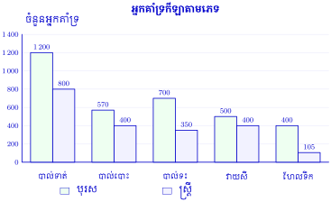
- ក. អ័ក្សដេកតាងប្រភេទកីឡាទាំង \(\displaystyle 5\) និងអ័ក្សឈរតាងចំនួនអ្នកគាំទ្រ។ ក្នុងកីឡានីមួយៗ សង់ពីរសសរតាងបុរសនិងស្ត្រី ដូចក្រាបខាងលើ។
- ខ.
បាល់ទាត់មានអ្នកគាំទ្រជាបុរសច្រើនជាងគេ គឺ \(\displaystyle 1~200\) នាក់។ យកអ្នកគាំទ្រជាបុរសទាំងអស់ជាគោល ៖
\[\begin{aligned} M&=1~200+570+700 \\ &\quad+500+400 \\ &=3~370~\text{នាក់} \\ p_M&=\frac{1~200}{3~370}\times100\% \\ &\approx35.61\% \end{aligned}\] - គ.
ហែលទឹកមានអ្នកគាំទ្រជាស្ត្រីតិចជាងគេ គឺ \(\displaystyle 105\) នាក់។ យកអ្នកគាំទ្រជាស្ត្រីទាំងអស់ជាគោល ៖
\[\begin{aligned} F&=800+400+350 \\ &\quad+400+105 \\ &=2~055~\text{នាក់} \\ p_F&=\frac{105}{2~055}\times100\% \\ &\approx5.11\% \end{aligned}\] - ឃ.
ចំនួនអ្នកគាំទ្រសរុបតាមតារាង ៖
\[\begin{aligned} N&=M+F \\ &=3~370+2~055 \\ &=5~425~\text{នាក់} \end{aligned}\]
ដូចនេះ បុរសគាំទ្របាល់ទាត់ច្រើនជាងគេ (\(\displaystyle 35.61\%\) នៃបុរសទាំងអស់) ស្ត្រីគាំទ្រហែលទឹកតិចជាងគេ (\(\displaystyle 5.11\%\) នៃស្ត្រីទាំងអស់) និងអ្នកគាំទ្រសរុប \(\displaystyle 5~425\) នាក់។
សម្គាល់ សំណួរមិនបញ្ជាក់គោលភាគរយ។ បើគិតក្នុងកីឡានីមួយៗវិញ បុរសក្នុងកីឡាបាល់ទាត់មាន \(\displaystyle \frac{1200}{1200+800}\times100\%=60\%\) និងស្ត្រីក្នុងកីឡាហែលទឹកមាន \(\displaystyle \frac{105}{400+105}\times100\%\approx20.79\%\)។ ចំនួនសរុប \(\displaystyle 5~425\) នាក់សន្មតថាមនុស្សម្នាក់ត្រូវបានរាប់តែមួយដង។
បុរសម្នាក់មានប្រាក់ចំណូលប្រចាំខែ 1 400 000 ៛ ហើយមានការចំណាយប្រចាំខែមួយចំនួន ។ គាត់ចង់ទិញម៉ូតូមួយគ្រឿងថ្លៃ 4 000 000 ៛ ។ តើគាត់ត្រូវចំណាយពេលសន្សំប្រាក់ប៉ុន្មានខែដើម្បីសម្រេចគោលដៅទិញម៉ូតូរបស់គាត់? គាត់មានការចំណាយប្រាក់ខែមួយចំនួនដូចបង្ហាញក្នុងក្រាបខាងក្រោម៖
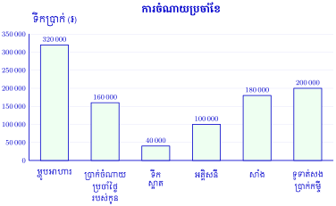
មើលដំណោះស្រាយ
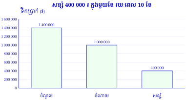
គណនាចំណាយប្រចាំខែទាំងអស់តាមក្រាប ៖
\[\begin{aligned} C&=320~000+160~000+40~000 \\ &\quad+100~000+180~000+200~000 \\ &=1~000~000~\text{៛} \end{aligned}\]ប្រាក់ដែលអាចសន្សំបានក្នុងមួយខែ ៖
\[\begin{aligned} S&=1~400~000-1~000~000 \\ &=400~000~\text{៛} \end{aligned}\]ចំនួនខែដែលត្រូវសន្សំ ៖
\[\begin{aligned} n&=\frac{4~000~000}{400~000} \\ &=10~\text{ខែ} \end{aligned}\]ដូចនេះ គាត់ត្រូវសន្សំប្រាក់រយៈពេល \(\displaystyle 10\) ខែ ដោយសន្មតថាមិនទាន់មានប្រាក់សន្សំ ចំណូលនិងចំណាយនៅដដែល ហើយមិនគិតការប្រាក់និងការចំណាយបន្ថែម។
គ្រួសារមួយមានផែនការចំណាយប្រចាំឆ្នាំដូចក្នុងតារាងខាងក្រោម៖
ការចំណាយ ចំនួនទឹកប្រាក់ កាតទូរសព្ទ 800 000 ៛ ម្ហូបអាហារ 6 000 000 ៛ អគ្គិសនី 700 000 ៛ សម្លៀកបំពាក់ 1 000 000 ៛ សាំងម៉ូតូ 1 500 000 ៛ ជួសជុលផ្ទះ 5 000 000 ៛ ទូទាត់សងប្រាក់កម្ចីធនាគារ 4 000 000 ៛ - ក. ចូរសង់ក្រាបសសរអំពីផែនការចំណាយប្រចាំឆ្នាំ ។
- ខ. តើគ្រួសារនេះត្រូវការចំណូលប្រចាំឆ្នាំប៉ុន្មានសម្រាប់ការចំណាយនេះ?
- គ. ចូរបកស្រាយក្រាបសសរ ។
មើលដំណោះស្រាយ
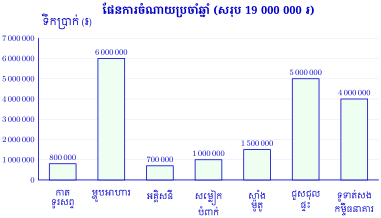
- ក. យកអ័ក្សដេកតាងប្រភេទចំណាយ និងអ័ក្សឈរតាងទឹកប្រាក់គិតជារៀល។ ខ្នាតមួយជំហានស្មើ \(\displaystyle 1~000~000\) ៛។ សង់សសរតាមទិន្នន័យក្នុងតារាង ដូចក្រាបខាងលើ។
- ខ.
ប្រាក់ចំណូលប្រចាំឆ្នាំត្រូវគ្រប់គ្រាន់សម្រាប់ចំណាយសរុប ៖
\[\begin{aligned} T&=800~000+6~000~000 \\ &\quad+700~000+1~000~000 \\ &\quad+1~500~000+5~000~000 \\ &\quad+4~000~000 \\ &=19~000~000~\text{៛} \end{aligned}\]ដូចនេះ គ្រួសារត្រូវការចំណូលយ៉ាងតិច \(\displaystyle 19~000~000\) ៛ ក្នុងមួយឆ្នាំសម្រាប់ចំណាយទាំងនេះ។
- គ.
ម្ហូបអាហារចំណាយច្រើនជាងគេ គឺ \(\displaystyle 6~000~000\) ៛ បន្ទាប់មកជួសជុលផ្ទះ \(\displaystyle 5~000~000\) ៛ និងទូទាត់សងប្រាក់កម្ចីធនាគារ \(\displaystyle 4~000~000\) ៛។ អគ្គិសនីចំណាយតិចជាងគេ គឺ \(\displaystyle 700~000\) ៛។ ចំណាយបីប្រភេទធំបំផុតសរុប ៖
\[\begin{aligned} T_3&=6~000~000+5~000~000 \\ &\quad+4~000~000 \\ &=15~000~000~\text{៛} \end{aligned}\]គ្រួសារអាចប្រើក្រាបនេះដើម្បីប្រៀបធៀបចំណាយ និងរៀបចំផែនការចំណូលឱ្យគ្រប់គ្រាន់។
ដូចនេះ ផែនការចំណាយប្រចាំឆ្នាំសរុប \(\displaystyle 19~000~000\) ៛ ហើយម្ហូបអាហារជាចំណាយធំបំផុត។
ខ្លឹមសារ៖ សៀវភៅពុម្ពគណិតវិទ្យាថ្នាក់ទី៧ របស់ក្រសួងអប់រំ យុវជន និងកីឡា · វាយអត្ថបទ គូររូបភាពឡើងវិញ និងរៀបចំលើអនឡាញដោយលោកគ្រូ សាន សុខលី សម្រាប់ការសិក្សាដោយឥតគិតថ្លៃ និងមិនរកប្រាក់ចំណេញ។ មិនមែនជាការបោះពុម្ពផ្លូវការរបស់ក្រសួងទេ។